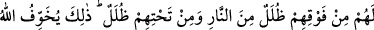
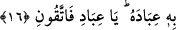
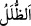
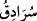

16. Onların üstlerinde ateşten tabakalar, altlarında da (öyle) tabakalar var. İşte
Allah kullarını bununla korkutuyor. Ey kullarım! Yalnızca benden korkun.
“Onların üstlerinde ateşten tabakalar,”
“
” kelimesi “
”nin çoğuludur. Gölgeleyen bulut ve çardak şeklinde gölgeleyen
nesne, demektir.
Keşfü’l-esrâr’da “
” seni üst tarafından gölgeleyen nesnedir.” der.
Mânâ şöyledir: Hüsrâna uğrayanlar için, üst taraflarında olmak üzere birbirlerinin
üstüne yığılı vaziyette çok sayıda bulut vardır. Maksad, ateşten tabaka ve duvarlar ile
ateşin dumanıdır. Ateşe zulle/gölgeleyen nesne denilmesi kalınlığı, kesâfeti ve onların
üst taraflarına bakmalarına mâni olması sebebiyledir.
Burada hüsrana uğrayanların cehennemdeki durumlarının ne kadar sıkıntılı olduğu
hissettirilmektedir. Çünkü zulle, özellikle Hicâz gibi sıcak yerlerde sırf serinleyip
gölgelenmek içindir. Zulle bir de ateşin kendisinden olursa daha da sıcak olur, altında
olanlar daha fazla gam ve keder çekerler.
Ayrıca “altlarında da (öyle) tabakalar var.” Maksad, ateşin onları her taraftan
sardığını ifâde etmektir. Nitekim Allah Teâlâ: “Ateşin duvarları onları çepeçevre
kuşatmıştır” (el-Kehf, 18/29) buyurur. “
” kelimesi, “
” yâni çadır demektir.
Kehf sûresinde geçtiği gibi kendilerini çepeçevre kuşatan ateş böyle bir çadıra
benzetilmiştir. Bu âyetin benzeri, “O gün azab onları hem üstlerinden hem de
ayaklarının altından kaplar.” (el-Ankebût, 18/55) âyeti ile “Onlar için cehennem
ateşinden döşekler, üstlerine de örtüler var!” (el-A’râf, 7/41) âyetidir.
Bazı âlimler “altlarında da (öyle) tabakalar var.” ifâdesini şöyle açıklamıştır:
Altlarında da ateşten tabakalar ve birbirinin altında pek çok derekeler vardır ki bunlar
ötekiler için, hattâ ateşin derekelerinde/çukurlarında aşağı doğru inerlerken onlar için
gölgeliklerdir. Nitekim Süddî der ki: Bu tabakalar onların altında olanlar için bir
gölgeliktir. Bu durum cehennemin dibine ve münafıklara âid olan en alt kata kadar
devam eder. Bu durumda gölgelik (zulel) onların altında olanlar için olurken kendileri
için yaygı mesabesindedir.
Nitekim el-Es’iletü’l-müfhıme’de de şöyle der: “Gölge üstte olan bir şeyden olduğu
halde altta olan bir nesne nasıl gölgelik olarak isimlendirilir?” sorusuna şöyle cevap
verilebilir: Çünkü bunlar da kendilerinin altında bulunanları gölgelemektedir. Burada
sebep hükmüne izâfe edilmiştir.”
“İşte Allah kullarını bununla korkutuyor.” Kur’an’da Allah’ın kullarını îman etsinler,
kendisinden sakınsınlar ve kendilerini oraya düşürecek şeylerden uzak dursunlar diye
tehdîd ayetleriyle korkuttuğu azab, işte bu dehşet verici, feci azabdır.